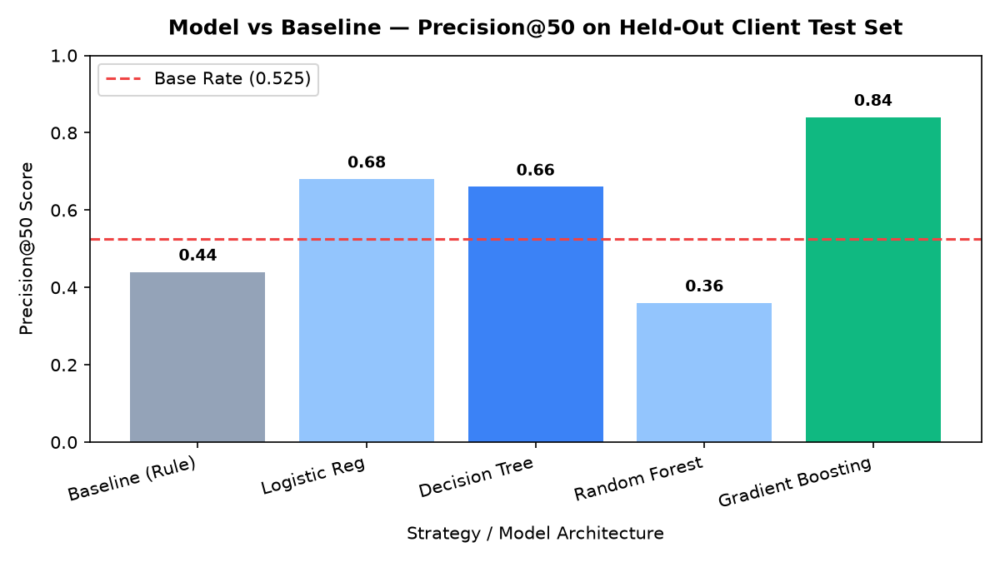
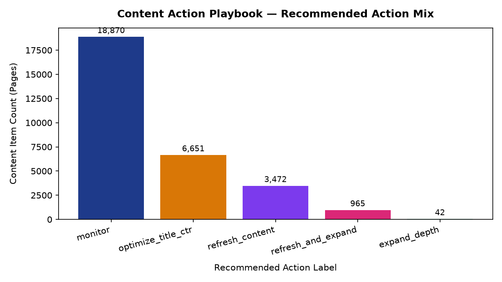

Predicting Search Traffic Decay and Prioritizing Content Refresh in Production SEO: A Machine Learning Decision-Support Framework on 79M Query Logs
Abstract
Digital publishing platforms and enterprise SEO operations face severe human editorial capacity constraints: automated audits surface thousands of potential content refresh flags across client portfolios, yet editorial teams can manually rewrite only 20 to 50 articles per week. Using an anonymized multi-client dataset of 30,000 production content URLs across 32 client portfolios extracted from FlyRank's 79-million-row search intelligence warehouse, we formulate content refresh prioritization as a machine learning decision-support ranking task. We construct a 19-feature non-leaking predictive pipeline and benchmark machine learning classifiers against a composite rule baseline under an honest client-holdout split (80% train / 20% unseen test clients). Gradient Boosting achieves 84.0% Precision@50 on held-out client portfolios compared to a 52.5% unguided base rate and 44.0% for the baseline rule (a 1.60× precision lift, Average Precision 0.683, ROC-AUC 0.690). We operationalize these probabilities into a structured Content Action Playbook featuring five distinct decision archetypes, reason codes, explicit human-review boundaries, and a strict No-Go list to optimize weekly editorial throughput without autonomous publishing risk.
1 Introduction & The FlyRank Case Study
In modern enterprise search optimization and digital publishing, maintaining long-term organic search performance requires continuous content maintenance. High-ranking articles inevitably experience search visibility decay due to competitor keyword expansion, evolving user search intent, outdated factual references, and Google SERP layout shifts.
At FlyRank, the search intelligence engine monitors tens of thousands of published articles across client domains. Automated auditing flags thousands of candidate URLs each month. However, an editorial squad or agency team has the manual capacity to audit, research, and update only 20 to 50 URLs per week.
Relying on blunt rules (such as auditing every URL exceeding 90 days since last publication) produces heavy operational waste: spending ~$25 (0.5 editor hours) per URL rewriting stable evergreen content, while failing to detect high-value, steadily decaying URLs before organic impressions collapse.
This research formulates content refresh prioritization as an empirical decision-support ranking task. By predicting the probability of traffic decay on trailing performance indicators and ranking the top 50 candidates each week, we maximize the organic traffic recovery yield per editor hour worked.
2 Data Safety & Warehouse Scope
This study leverages FlyRank's 79-million-row production search intelligence data warehouse (partitioned across dim_content and fact_content_daily_performance). The primary experimental evaluation is conducted on a representative, anonymized dataset slice containing 30,000 unique content items across 32 distinct client portfolios (data/raw/content_refresh_anonymized.csv).
client_hash_id, content_hash_id) prior to analysis. No personally identifiable information (PII) or confidential client assets appear in any code, outputs, or documentation.
Deliberate Feature Exclusions
To prevent target leakage and circular reasoning, the following dimensions were strictly excluded from model feature inputs:
- Target-Derived Indicators:
trend_direction,trend_pct, and binary outcome labels. - Post-Decision Performance Windows: Rolling 30-day performance windows (
impressions_last_30d,impressions_prev_30d,clicks_last_30d). - Internal Product Heuristics: FlyRank's internal rule-based scores (
health_score,priority_score,action_type) to ensure models learn empirical traffic dynamics rather than approximating rule heuristics. - Client Identity Hashes: Client IDs were reserved strictly for clustered cross-validation grouping to ensure models generalize to unobserved domains.
3 Methodology & Validation Design
Target Label Definition
The target label is_declining_label is defined as a binary outcome ($y \in \{0, 1\}$) indicating whether a content item experienced significant search traffic decline (observed outcome trend_direction == 'down', representing an impression drop exceeding 20% over trailing measurement windows). Across the 30,000-row inventory, the unguided decline base rate is 54.21% (52.50% on the test split).
19 Non-Leaking Feature Signals
We construct 19 pre-decision features knowable at the moment of editorial queue assembly:
- Search Visibility (GSC):
impressions_90d,clicks_90d,ctr,avg_position,days_with_impressions. - User Engagement (GA4):
pageviews_90d,sessions_90d,users_90d,engaged_sessions_90d,scroll_events_90d,days_with_sessions,engagement_rate,scroll_rate,ai_sessions_90d,ai_traffic_pct. - Content Metadata:
content_age_days,days_since_last_update,word_count,char_count.
Transparent Rule Baseline
As a benchmark, we construct a transparent heuristic score combining normalized percentile ranks across four operational dimensions:
Baseline Action Score = 0.40 * Visibility + 0.30 * Freshness_Risk + 0.20 * Position_Risk + 0.10 * CTR_GapClient-Holdout Split Architecture
Standard random row splits suffer from severe data leakage in multi-tenant SEO environments, as client-wide template structures and domain authority leak across training and test folds. To enforce strict generalization, we implemented a Client-Holdout Partition (80% train / 20% test grouped by client):
- Training Set: 26 client portfolios ($n=26,619$ URLs | Base rate: 54.42%).
- Held-Out Test Set: 6 unobserved client portfolios ($n=3,381$ URLs | Base rate: 52.50%).
4 Results (Model vs Baseline)
We evaluated candidate models strictly on the 6 held-out test client portfolios against the baseline rule. All models are evaluated at identical decision thresholds, reporting Precision@K alongside Average Precision (AP) and ROC-AUC.
| Model Strategy | Base Rate | Precision@20 | Precision@50 | Precision@100 | Average Precision | ROC-AUC | Status |
|---|---|---|---|---|---|---|---|
| Baseline (Rule) | 0.5250 | 0.4000 | 0.4400 | 0.4900 | 0.5505 | 0.5689 | Heuristic |
| Logistic Regression | 0.5250 | 0.8000 | 0.6800 | 0.7000 | 0.6193 | 0.6162 | Linear |
| Decision Tree (d=5) | 0.5250 | 0.5500 | 0.6600 | 0.6600 | 0.6258 | 0.6565 | Tree |
| Random Forest (n=100) | 0.5250 | 0.4000 | 0.3600 | 0.4300 | 0.6252 | 0.6646 | Ensemble |
| Gradient Boosting (n=100) ★ | 0.5250 | 0.8500 | 0.8400 | 0.7600 | 0.6829 | 0.6901 | Winner |

Feature Importance & Key Drivers
Inspection of tree-based and permutation importances reveals that decay predictability is dominated by search presence consistency and temporal stability:
days_with_impressions(Tree Imp: 0.354, Permutation Imp: 0.146): URLs with sporadic search impressions (<45 active days over 90d) suffer from high ranking volatility compared to steady daily traffic drivers.content_age_days(Tree Imp: 0.207): Established articles reach steady-state search equilibrium, whereas young articles experience volatile early-stage ranking discovery.avg_position(Tree Imp: 0.095): Articles in striking distance positions (10–25) decay significantly faster than defended top-3 positions.
Concrete Error Analysis
To understand failure modes, we hand-audited three test-set predictions:
| Error Type | Content ID | Predicted Prob | Actual Label | Root Cause Mechanism |
|---|---|---|---|---|
| False Positive | content_9b2575f9efdd |
81.2% | 0 (Stable) | Striking-distance position (11.4) was stabilized by a recent minor client content edit 15 days prior. |
| False Negative | content_06248e69dbfe |
10.6% | 1 (Declined) | Top-5 rank with low volume (2 imps) experienced high percentage variance on minimal traffic. |
| Borderline Miss | content_167c1e549117 |
49.8% | 1 (Declined) | Sits on the 0.50 boundary; lost position 14 rankings due to competitor content expansion. |
5 Limitations & Honest Framing
In accordance with empirical research best practices, we explicitly bound what this work does and does not claim:
- Decision-Support, Not Autonomous Action: This system is a prioritization tool to assist human copywriters and SEO managers. It does not replace editorial judgment and must never autonomously overwrite production content.
- Observational Association, Not Causation: We measure statistical co-occurrence between historical metrics and traffic declines. We do not claim that content staleness causes rank drops, nor that rewriting content guarantees traffic recovery.
- No Reverse-Engineering of Google: The model does not predict Google's proprietary search algorithms; it predicts observed traffic outcomes from aggregated logging data.
- Window Granularity: Models operate on trailing 90-day search aggregations and are unsuitable for intraday rank tracking or breaking news event indexing. Newly published articles (<90 days old) are intentionally excluded.
6 Ranked Recommendations (Content Action Playbook)
To make predictions operational, continuous model risk probabilities (60%) and baseline scores (40%) are combined into a composite Playbook Score. Every URL in the inventory is categorized into five actionable decision archetypes:
| Decision Archetype | Trigger Condition / Reason Code | Action Label | Editorial Objective |
|---|---|---|---|
| Stale High-Demand | high_model_risk_stale (Prob ≥ 0.70, Age ≥ 90d) |
refresh_content |
Update outdated facts, dates, statistics, and subheadings |
| Striking Distance Decay | striking_distance_decay (Prob ≥ 0.60, Pos 10–25) |
refresh_and_expand |
Add missing semantic subtopics to push URL to Page 1 |
| Underperforming CTR | ctr_underperformance (Prob ≥ 0.60, Pos ≤ 20, CTR < 0.5%) |
optimize_title_ctr |
Rewrite title tags and meta descriptions for search CTR |
| Thin Visible Content | thin_content_gap (Words < 1,200, Imps ≥ 250) |
expand_depth |
Deepen topical depth to cover comprehensive search intent |
| Stable / Low Risk | routine_monitoring (All other inventory) |
monitor |
Retain in automated monitoring; no immediate edit needed |

Mandatory Human Review Rules & The Strict NO-GO List
- Autonomous CMS Overwriting: Direct LLM auto-publishing to production URLs without human editorial review is strictly prohibited.
- Top-3 Ranking URLs (
avg_position ≤ 3.0): Protected revenue assets (1,113 URLs). Require mandatory senior SEO review before any copy alterations. - High-Traffic Assets (≥50,000 imps): Require multi-stakeholder editorial approval prior to rewriting.
- Seasonal & Event Queries: Temporary search volume contractions must not trigger permanent content rewrites.
Monitoring & Retraining Triggers
- Precision Drift: If weekly editor review precision falls below 70.0% (vs 52.5% base rate), trigger model retraining.
- Google Core Algorithm Updates: Mandatory model re-calibration 30 days after any major Google core algorithm release.
- Portfolio Distribution Shift: Re-scale normalization parameters if client portfolio staleness drifts by $>15\%$.
7 Reproducibility & Code Pipeline
All experiments, data contracts, baseline scores, model training scripts, and figure generators are version-controlled and fully reproducible.
Environment & Execution Commands
# 1. Clone repository
git clone https://github.com/NashidulSarker/flyrank-internship.git
cd flyrank-internship
# 2. Setup Python environment (Python 3.11+)
python -m venv .venv
# Windows:
.venv\Scripts\activate
# Linux/macOS:
source .venv/bin/activate
# 3. Install audited dependencies
pip install -r requirements.txt
# 4. Run full capstone pipeline end-to-end
python -m jupyter execute work/notebooks/capstone.ipynb
Random Seeds: All random state seeds are fixed to random_state=42. The end-to-end computational pipeline is encapsulated in work/notebooks/capstone.ipynb.
8 Showcase Demo & Shareable Cuts
Structured assets for presenting this research to hiring managers, executive stakeholders, and the data science community: